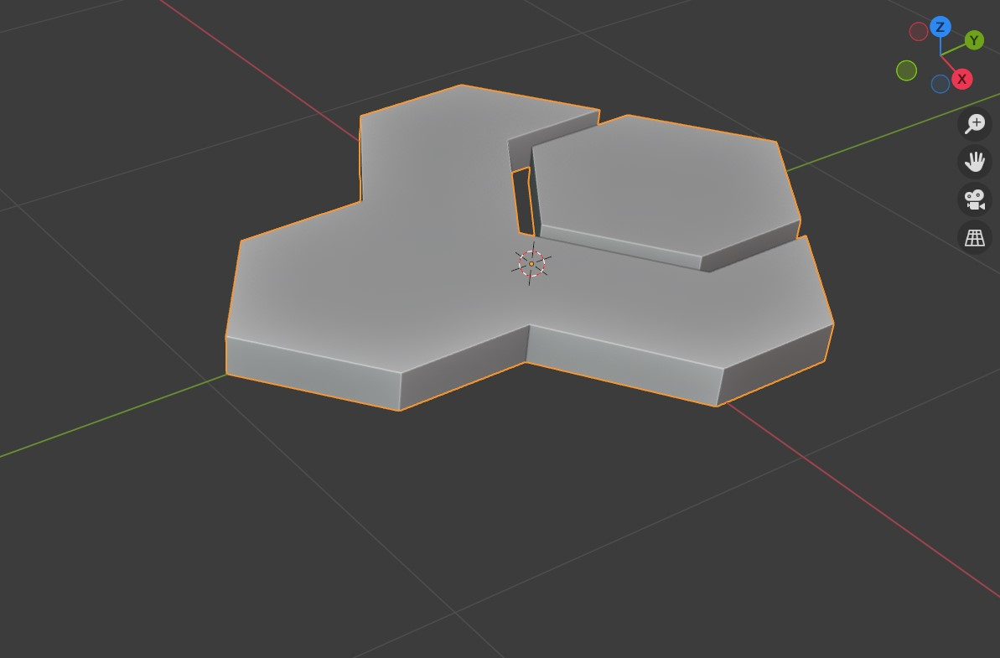
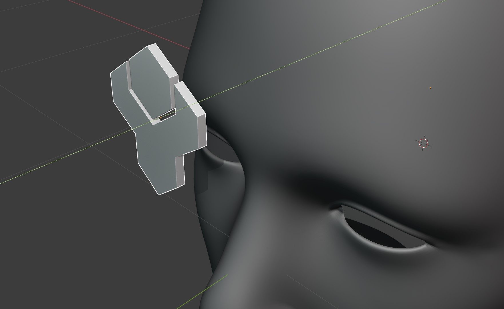
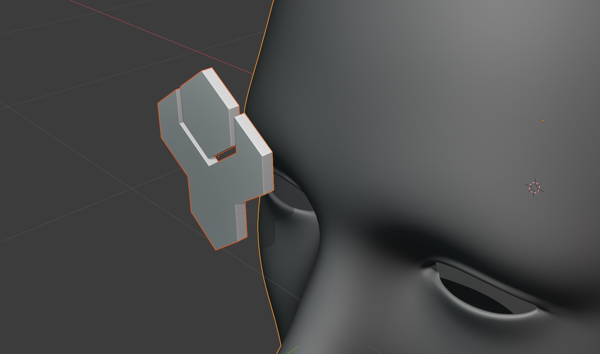
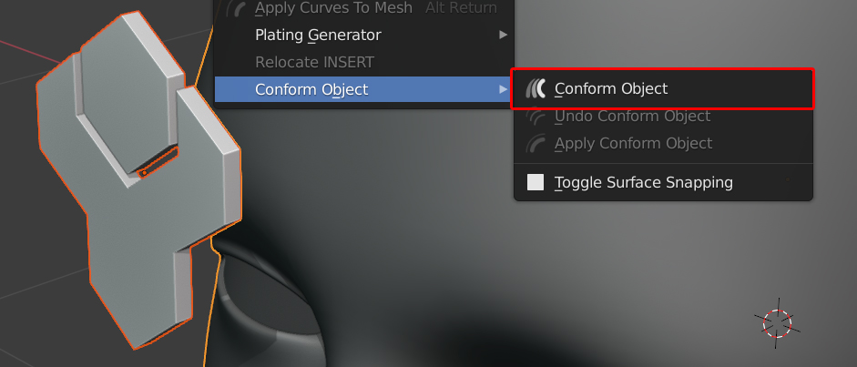

Select the Source Object. Source objects need to have the following:
When they have no rotation, the ‘bottom’ of the object is pointing to the bottom of the world view:

Ideally source objects also:
Have a good level of topology so that they can be deformed (good number of vertices and quad faces)
Do not have modifiers such as booleans which are dependent on other objects.
Do not have lots of parents/children.
Position the object on top of the surface of the target object you wish to wrap it to, where the ‘bottom’ of the object is pointing towards the faces you wish to place it on:

Here, the source object has been rotated 90 degrees and is pointing towards the target object’s forehead.
You can also position the object on the surface using the Toggle Surface Snapping option.
Select both the source object and then the target object:

Both objects selected, with the target object being the active object (the last object selected)
The source object, hold shift, and then select
The target object
So that both objects are selected.
Right-click in the viewport, and select the Conform Object menu. Select Conform Object:

The object will now be conformed to the target object. In the bottom right of the viewport, you can expand the menu to view Options: